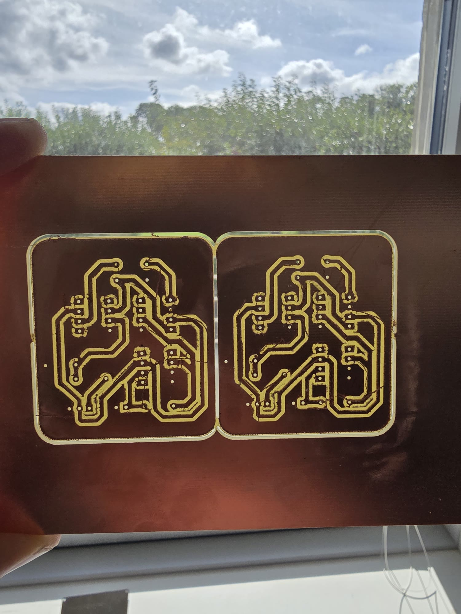
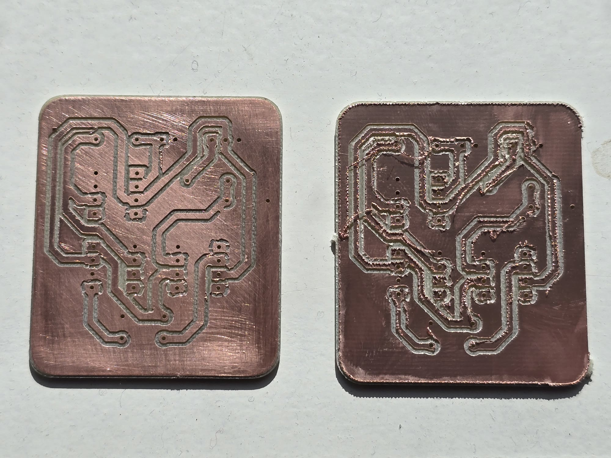

KiCad in, a finished PCB out. The Roland SRM-20 mill drills the holes and cuts the board out; the xTool F1 Ultra fiber laser etches the copper, lined up on those holes. One app, one plan, two machines.
Gaps down to 0.20 mmWindows · Linux · macOSOpen source
The method: Laser · from KiCad, as set by KiCad's Set design rules for SRM-CAM.
Your board and Check it: is it right, and can it be made?
On the mill: Drill and cut outMILL, one run on the SRM-20.
On the laser: Etch the traces, then mask, silkscreen and stencil LASER, each opening the laser page.
One rail for both machines, top to bottom in the order you do it (a screenshot, Novice).
How a board is made
The usual way: the mill does the holes and the outline, the laser does the copper.
KiCadExportSet design rules for SRM-CAM for the laser, route, then Send to SRM-CAM.
MillDrill and cut outHoles and outline, on tabs. The board stays in its sheet: the laser marks the waste round it.
LaserCalibrateFinds the board by its holes, focuses, marks the waste to correct the camera, locks onto the holes.
LaserEtch the tracesCheck, re-etch spots. Then mask and silkscreen (still experimental) if you want them.
BenchBreak the tabsThe board is done.
One sheet, two machinesThe mill drills and cuts out on tabs, the whole sheet goes to the laser, Calibrate marks the waste and finds the holes, the laser etches, and the tabs are broken last. Tap a stage, or let it play. Schematic.
The mill can still make a whole board by itself: drill, isolate the traces and cut out, in one run. It is slower and coarser than the laser, but it needs only the SRM-20.
Mill + laser (the usual way)
Mill alone
Narrowest gap between nets
0.20 mm
0.8 mm with the flat bit, 0.44 mm with the ball mill
Speed
Faster: see the laser time below
Slower: the bit cuts every channel
Parts it suits
Dense SMD too: gaps the bit cannot cut
Through-hole and larger SMD; SOIC and 0603 with the ball mill
Machines
SRM-20, then the xTool F1 Ultra
SRM-20 only
Mask, silkscreen, stencil
On the laser either way: mask and silkscreen lined up on the drilled holes, the stencil cut from steel foil
Laser time, the curtain-drive board: about 5 minutes with SRM-CAM's concentric rings, against about 2 hours for the same board through xTool Creative Space's own fill (the old way). That is laser against laser; no mill time is measured.
Use the mill alone when the laser is busy or not there, or for a simple through-hole board: Mill a whole board. Which way a board is made is its method, set in KiCad or picked from the chip at the top left of the window: see The method chip.
New to the machines, or stuck? Ask Mads Rudolph or the course TAs.
Questions? Ask on Discord
Stuck, or not sure? Ask in the SRM-CAM Discord: Mads and other students answer there, and new features are explained first. See Community.
In a video: the mill-alone way
A whole board on the mill alone (the older way, before the laser), with chapters: watch on YouTube. The mill's part of a laser board is the same run without the traces.
Finished boards
Wanted: a laser board. A photo of a laser-etched board still on its tabs in its sheet, and the same board finished, belongs here. The two below were made on the mill alone.

Milled (mill alone), held to the light: every channel shows.

Milled (mill alone), cut out; one sanded, one not yet.
 1
2
3
4
1
2
3
4